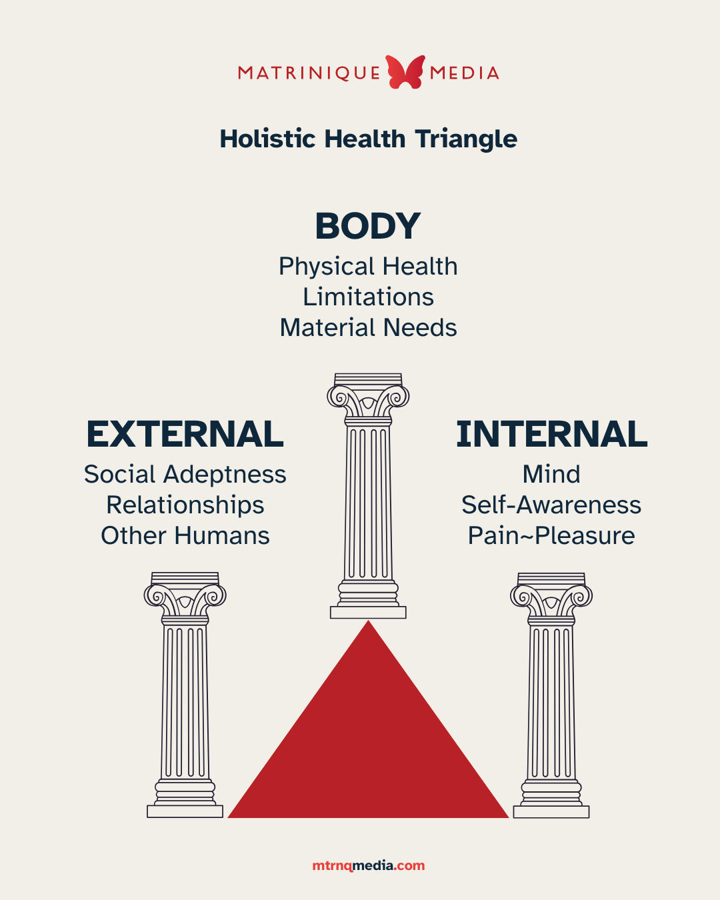

INTRODUCTION
The Framework
Behold! The Holistic Health Triangle

These are the 3 pillars of a life that this framework is based on. Improvement in one pillar is going to improve the others.
For example, I started this path improving my Body. I got anti-depressants, which made me feel what (I supposed) normal people feel all the time. Which showed me the feeling I needed to pursue as a goal if I were to feel “normal.” Then I moved out of the parental environment that was slowly killing me mentally.
Moving out forced me to be an adult and strengthened my skills in interacting in the workplace and socially. It forced me to figure out how to act around colleagues, and how to take care of friendships. So I was improving my External.
And while I was improving my way of interacting socially, I was figuring things out about myself - what I wanted in a partnership, how to handle work-life balance, what were my dreams and were they possible - which is my Internal.
We do all this automatically, unconsciously. The goal is to make this process more intentional and conscious. You can divide up the dimensions of your life into these Pillars and map out a game plan.
This will help you forge your path.
What does "health" mean?
The diagram is called the “Holistic Health Triangle.”
Holistic just means “whole,” meaning it involves the disparate parts of your life as they come together. But what does “health” really mean?
Health is a sense of well-being that is sustainable. A sense of alignment with your nature so that living feels stable and meaningful. To use the map analogy, health means “being on the correct path for me.”
It's vague because “nature,” “stable,” and “meaningful” is going to mean different things for different people. But here's a list of feelings - symptoms - that would indicate the opposite of health. These symptoms indicate that you are not on the correct path:
- Hopelessness
- Sadness
- Numbness
- Constant anger
- Anxiety (or frequent panic)
- Fatigue
- Brain Fog
- Lack of meaning or clarity
- Pointlessness
- Pressure
- Loneliness
Exercise
SELF-DISCOVERY
- What things about your life would you change, if you could just wave a magic wand and make it all come true without effort or consequence?
- What is keeping you from achieving that change?
- Is there anything in your life that you're happy with, that you would like to continue, or have more of?